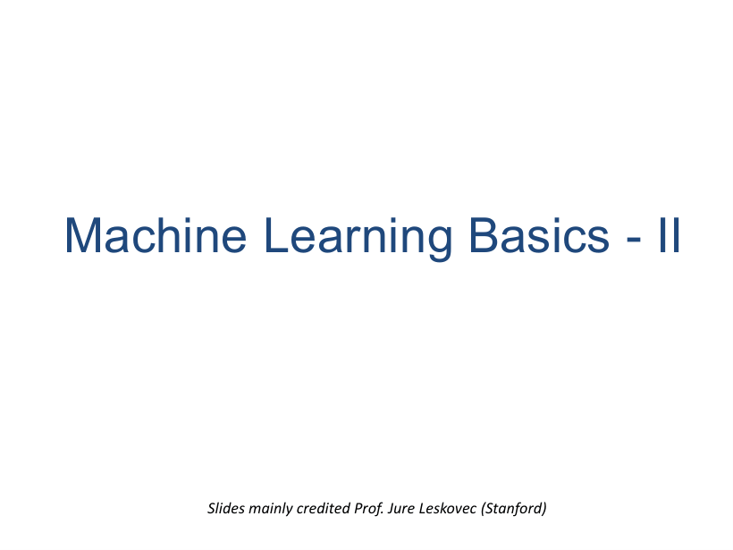
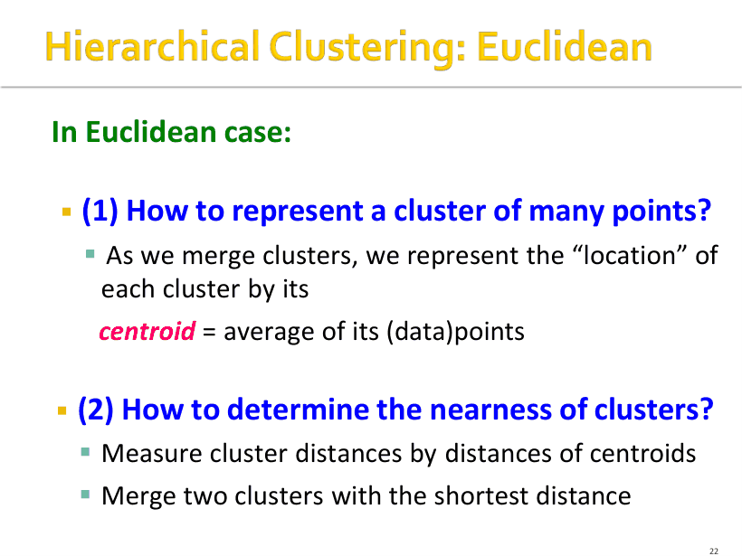
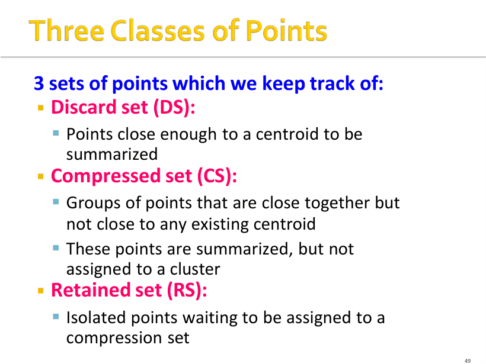

P1
本讲封面：机器学习 II

机器学习基础第二讲（Machine Learning Basics II）的封面，主题是聚类（clustering）。幻灯片主体参考 Stanford 的 Jure Leskovec。上一讲是监督学习，从这里开始进入无监督学习的部分。
半期必考：k-means 手算一轮迭代；BFR 的 2d+1 统计量与马氏距离；CURE 的收缩。覆盖课件 p1–p72（层次聚类、k-means、BFR、CURE 四套算法）。
数据只有 x₁,…,xₙ，没有标签、没有预定义输出，目标是"发现数据里有意思的结构、模式、关系"。课件特意强调这个目标是 vaguely-posed（含糊定义）。
这句"含糊"就是考点：监督学习有唯一正确答案，聚类没有。所以聚类题永远不会问"正确答案是什么"，只会问"用什么距离度量、k 怎么定、哪种链接方式、收敛到局部还是全局"。
给定点集以及点与点之间的距离（或相似度），把点分成若干簇，使同簇成员彼此接近/相似，不同簇成员不相似。通常三个前提：点在高维空间；相似度由某个距离度量给出；所以欧氏（Euclidean）、余弦（Cosine）、Jaccard、编辑距离（edit distance）都可能被用上。
同一份数据换一个距离度量，得到的簇完全不同。所以做任何聚类题的第一步永远是判定"欧氏还是非欧氏"——它决定了能不能用质心、能不能用 k-means。
课件 p11 的要点：同一份"集合"数据，你怎么看它，就决定了用什么距离——
| 看法 | 距离 / 相似度 | 含义 |
|---|---|---|
| 集合当向量（sets as vectors） | 余弦距离 | 看方向，不看长度 |
| 集合当集合（sets as sets） | Jaccard 距离 | 只看交集与并集 |
| 集合当点（sets as points） | 欧氏距离 | 把 0/1 当坐标 |
| 欧氏 Euclidean | 非欧氏 Non-Euclidean | |
|---|---|---|
| 点是什么 | 实数坐标向量 | 点就是点本身（集合 / 序列 / 图） |
| 能否求平均 | 能，平均即质心 centroid | 没有"位置"概念，没有质心 |
| 距离 | L2 范数、L1 范数 | Jaccard、Hamming、余弦 |
| 怎么代表一个簇 | 质心 | clustroid / 点的集合 / 内聚度 |
记住一句：质心是"算"出来的（可能不存在于数据中），clustroid 是"挑"出来的（一定是数据点）。BFR、k-means 都建立在"能求平均"上，所以只能在欧氏。
数据装得进内存 → 聚类简单直接，代表就是 k-means。数据驻留磁盘（disk-resident）→ 只能一次读一批进内存、聚完只保留簇的摘要，代表是 BFR 和 CURE。
"为什么需要 BFR / CURE"的标准答案：k-means 每轮都要扫全部点，磁盘驻留时 I/O 无法接受；BFR / CURE 把每批点压成 O(k) 的摘要，代价是多加了分布假设。
低维时"簇"肉眼可见；实际应用常常不是 2 维而是 10 维、10000 维。高维空间与直觉完全不同：几乎所有点对之间都很远，"最近邻"与"最远邻"的距离差距被压平，距离度量失去区分力，聚类（以及 KNN）随之退化。
课件给的量化实验（必考）：在 [0,1]^d 上均匀撒 10000 个点，问需要覆盖多大一块"边长"才能覆盖 0.1% 的数据（即拿到 10 个最近邻）。
结论：10 维时要覆盖 50% 的坐标范围才拿到 0.1% 的数据（选择题就爱问这个 50%）。体积按边长^d 增长，维度越高必须铺得越开。
与聚类的关系：k-means 全靠"到质心的距离"，当所有点距离都差不多时 SSE 曲面变平坦、任何划分都差不多好，聚类失去意义；层次聚类同理（簇间距离趋同，合并顺序变得任意）。
初始每个点自成一簇，然后反复合并"最近"的两个簇，直到只剩一个簇（或由停止条件截断）。反向的 divisive（自顶向下）从一簇开始递归切分，课件只提了一句。
课件明确说这一族方法有三个必须回答的问题，考试也按这三问出：
朴素实现每轮要在 O(N²) 个簇对里找最小、共约 N 轮，总代价 O(N³)，只能处理中小数据——这正是 BFR / CURE 存在的理由。
合并后簇的"位置"用质心代表：质心 = 簇内所有点的平均。簇间距离 = 质心之间的距离，合并质心最近的两簇。质心是"人造"的点，一般不是任何一个数据点。
课件 p23 的 6 点例子可当计算模板：簇 {(0,0),(1,2),(2,1)} 的质心 = ((0+1+2)/3, (0+2+1)/3) = (1,1)；簇 {(5,3),(4,1),(5,0)} 的质心 = (4.67, 1.33)；再比较两个质心的距离决定下一次合并。
非欧氏没有"位置"，所以只剩三种做法：(1) 挑一个真实点当代表 clustroid；(2) 把簇当成点的集合，用"跨簇最近点对"或"跨簇平均点距"定义簇间距离；(3) 用内聚度 cohesion：合并后 diameter（簇内最大点距）或平均点距越小越内聚，合并"最内聚"的那一对。
课件给了"最近"的三种口径，都可以：到其他点的最大距离最小、到其他点的平均距离最小、到其他点的距离平方和最小（这三个都是上式换掉聚合方式）。求出 clustroid 后，就把它当成质心用。
对比记忆：质心可能落在簇外、可能是空的区域；clustroid 一定落在簇内的某个数据点上。这是选择题最爱的一对。
| 链接方式 | 簇间距离定义 | 偏好什么形状 | 什么时候翻车 |
|---|---|---|---|
| 单链 Single Link | 两簇最近点对的距离（min） | 长条、链状、任意形状 | 噪声点会把两个本不相干的簇"串"起来（chaining） |
| 全链 Complete Link | 两簇最远点对的距离（max，即合并后 diameter） | 紧凑的球状簇 | 长条簇被强行割断；对离群点极敏感 |
| 平均链接 Average Link | 所有跨簇点对距离的平均 | 规模接近的均衡簇 | 对簇的大小差异敏感，两头不讨好 |
| 质心链接 Centroid Link | 两簇质心之间的距离 | 凸的、形状相近的簇 | 非凸 / 同心 / 弯曲形状：质心几乎重合，无法分开 |
课件用两张图演示"没有万能准则"：p30 里 A、B 的质心比 A、C 的质心更近，但 A、C 之间存在最近的成员点对 ⇒ 质心链接正确、最近点链接反而错；p31 反过来给一个密度分布的例子，最近点链接正确而质心链接出错。结论：合并准则的好坏取决于簇的形状，而形状事先并不知道。
对照：课件"跨簇最小点距"= 单链，"跨簇平均点距"= 平均链接，"合并后 diameter 最小"（diameter 即簇内最大点距）= 全链。

课外补充：dendrogram 的纵轴是"合并时的簇间距离"，在某个高度横切一刀，切到几条竖线就是几个簇——这条读法课件只给了图、没给文字，但考试问"k=3 时怎么从树上看"就靠它。
课件原话：It is a problem formulation, not an algorithm. 问题是——给定欧氏空间/距离和簇数 k，找 k 个中心，使每个点到所属中心的距离平方和最小。这个精确最优解是 NP-hard；近似解就是 Lloyd's algorithm，也就是通常说的 k-means 算法。
课外补充：为什么中心一定取均值？把 J 对 μ_i 求偏导置零得 2Σ(x − μ_i) = 0 ⇒ μ_i = 平均值。这一步是"更新"步骤的理论依据，简答题可以直接写。
为什么一定会停：课外补充：分配步与更新步都不会让 J 增加，而 N 个点的划分只有有限种 ⇒ 必然有限步停住；但停的是局部最优，SSE 可能远差于全局最优。
课件明确：收敛严重依赖初始中心的选择，可以 performance arbitrarily badly（同一个数据集，初值选糟就得到完全错误的分割）。两种选初值策略：随机取 k 个点；k-means++。
k-means++ 的思路：先取一个小样本 S（|S| 是 k 乘以一个"与点数成对数关系"的因子），在 S 上用任意算法聚类，把得到的质心当种子。取点方式是按随机顺序访问点，加入样本的概率正比于 D(p)²，其中 D(p) 是 p 到"最近的已选点"的距离——越孤立的点越容易被选，于是 k 个种子会自动散开。
对不同的 k 分别跑 k-means，画"平均到质心距离 vs k"曲线：曲线先是陡降，到真正的 k 之后下降变缓，拐点（肘部）就是最佳 k。k 太小 → 大量点到质心的距离很长；k 太大 → 平均距离几乎不再改善（只是把簇无意义地切碎）。
avg.dist
|\
| \
| \_
| \___
| \_____ more k: no gain
+---------------- k
best k (elbow)
BFR 是 k-means 的变体，专门处理极大、驻留磁盘的数据集：一次只读入"一内存"的一批点，处理后只保留统计摘要。目标是内存 O(簇数) 而不是 O(数据量)。
它的核心假设（也是它的软肋）：k 个簇在欧氏空间中服从正态分布，各维标准差可以不同，因此每个簇是轴对齐的椭圆。目标仍是找质心；点的最终归属可以在第二遍扫描数据时完成。
| 集合 | 全称 | 判定 | 怎么处理 |
|---|---|---|---|
| DS | Discard set | 离某个质心足够近 | 并入该簇、加进统计量，原始点直接丢弃 |
| CS | Compressed set | 彼此靠得很紧，但离所有已有质心都远 | 压缩成统计量保存，但还不分配给任何簇 |
| RS | Retained set | 孤立、既不够近也不够抱团 | 原样保留坐标，等下一批一起再判 |
一句话记：DS = 已归队并丢弃；CS = 抱团但没归队；RS = 散兵游勇，原样留着。
主循环（课件 6 步）：初始化 k 个质心 → 读入一批点 → 足够近的进 DS → 其余（含旧 RS）用内存算法聚类，成簇进 CS、离群进 RS → 累加 N/SUM/SUMSQ 并尝试合并 CS → 重复到读完；最后一轮把 CS、RS 并入最近簇。

每个簇（DS）只需要三个东西：N（点数）、SUM（d 维向量，各维坐标之和）、SUMSQ（d 维向量，各维坐标平方之和）。1 + d + d = 2d+1 个数，就能代表任意大小的簇——这就是"内存 O(簇数)"的来源。
陷阱：SUMSQ_i − SUM_i²/N 是"平方偏差和"Σ(x−μ)²，不是方差；方差还要再除以 N。两个式子别混。
为什么是 2d+1 而不是更多：因为"轴对齐"假设等价于各维独立，协方差矩阵是对角阵，只需存 d 个方差而不是 d×d 个协方差。课件特意点明：一旦放弃轴对齐（允许斜椭圆），就必须存完整 d×d 协方差矩阵，d 稍微大一点就爆内存——这就是轴对齐假设的真正代价与理由。
判断"一个点是否足够近、可以进 DS"有两个办法：马氏距离小于阈值；或者"属于最近质心的似然足够高"。课件详细给了第一种。
必背性质：若簇在 d 维上服从正态分布，则变换后1 个标准差对应马氏距离 √d；于是该簇 68% 的点马氏距离 < √d，95% 的点 < 2√d。所以阈值常取"2 个标准差"（≈2√d）。
直观（课件 p60 三张对比图）：欧氏距离的等距线是球；马氏距离的等距线是顺着簇分布形状拉长的椭圆。所以同一个点，用欧氏看"远"，用马氏可能"很正常"。
合并两个 CS 的判据：算出合并后的方差，低于阈值就合并。因为 N、SUM、SUMSQ 可以相加（N=N₁+N₂，SUM=SUM₁+SUM₂，SUMSQ=SUMSQ₁+SUMSQ₂），所以合并后的方差可以瞬间算出来，不用碰原始点。另有"按维度区别对待""考虑密度"等变体。
CURE 只假设欧氏距离：不限簇形状、不要求各维正态、不要求坐标轴固定（斜的椭圆也行）。代价是 k（簇数）必须事先给定。核心差别：不用一个质心代表簇，而用一组"代表点"（representative points）来代表簇。
采样足够大时，总有一些代表点会落在簇的边界上；把它们朝质心移，就把它们推进簇的内部。关键的不对称性：大而散（loose）的簇，代表点离质心远，收缩移动的距离大；小而密（dense）的簇，代表点本来就靠质心，移动很小——因为移动量正比于到质心的距离。
于是距离比较时，大散簇的"势力范围"被温柔地缩小了，它就不会把旁边一个小而密的簇吞掉。课件原话：favors a small, dense cluster that is near a larger dispersed cluster。
| 维度 | k-means | BFR | CURE |
|---|---|---|---|
| 数据在哪 | 必须在内存 | 磁盘驻留，一次读一批 | 磁盘驻留，两遍扫描 |
| 簇的形状假设 | 凸 / 球状（Voronoi 划分） | 轴对齐的正态椭圆 | 任意形状 |
| 簇怎么表示 | 一个质心 | 质心 + 2d+1 统计量 | 多个已收缩的代表点 |
| 需要给定 k 吗 | 需要 | 需要初始 k（可新增簇再合并） | 需要 |
| 主要弱点 | 初始化敏感、局部最优 | 正态 + 轴对齐假设 | 两遍 I/O、代表点个数要调 |
答题套路：内存还是磁盘 → 对簇形状的假设 → 每簇用什么摘要表示。
答案：原簇：μ = 10/4 = 2.5；Var = 30/4 − 2.5² = 7.5 − 6.25 = 1.25，σ ≈ 1.118。
合并：N = 6，SUM = 18，SUMSQ = 66 ⇒ μ = 18/6 = 3；Var = 66/6 − 3² = 11 − 9 = 2，σ ≈ 1.414。
要点：合并只需把三个统计量分别相加，永远不用碰原始点——这就是 2d+1 的意义。
答案：y₁ = (4−2)/1 = 2，y₂ = (5−3)/2 = 1 ⇒ d_M = √(2² + 1²) = √5 ≈ 2.24。
正态下 1σ ↔ √d = √2 ≈ 1.41，2σ ↔ 2√d ≈ 2.83。所以 1σ 阈值下拒绝（2.24 > 1.41），2σ 阈值下接收（2.24 < 2.83）。
对照：普通欧氏距离 = √(2²+2²) ≈ 2.83，恰好卡在上限——用欧氏会得出"刚好边界"的错误直觉。
答案：分配：0→c₁（距 0）；1→c₁（距 1 < 5）；5→c₂（距 1）；6→c₂（距 0）。
更新：μ₁ = (0+1)/2 = 0.5，μ₂ = (5+6)/2 = 5.5。
再分配：1 到 0.5 距离 0.5 < 到 5.5 的 4.5 → 留 c₁；5 到 5.5 距离 0.5 < 到 0.5 的 4.5 → 留 c₂。点不再换簇 ⇒ 已收敛。
SSE = 0.5² + 0.5² + 0.5² + 0.5² = 1。
答案：权重是距离的平方：1² = 1，2² = 4，2² = 4，总和 9。
概率分别 1/9、4/9、4/9。注意第三个点与第二个点权重相同（虽然它们在同一"远"的程度），所以"距离为 2 的点"合计以 8/9 的概率当选。
每格 = 课件原页截图 + 中文讲解；标 考点 的页容易出题或容易错。宽屏时图在左、讲解在右；点顶部「页面目录」可跳到任意页。